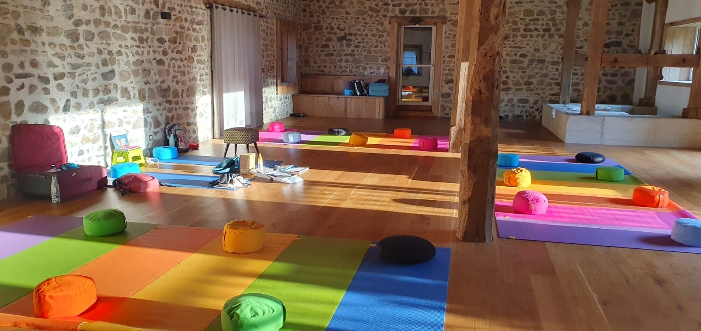
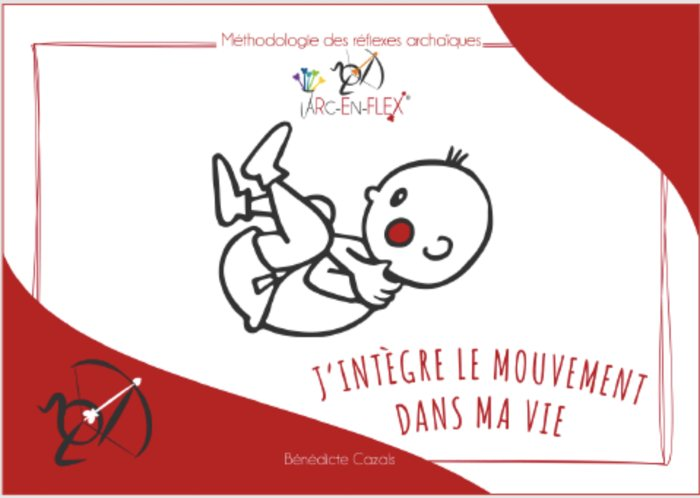
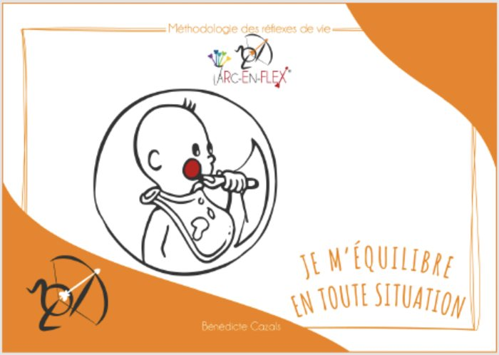
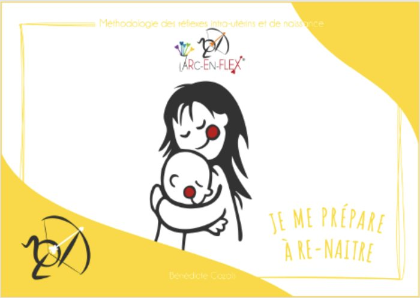
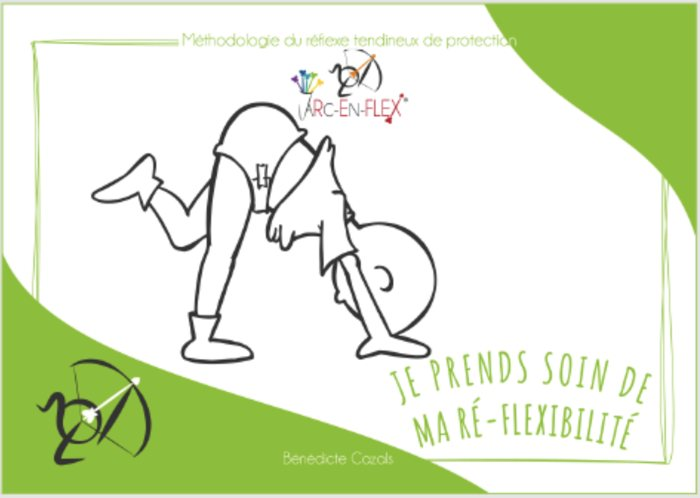
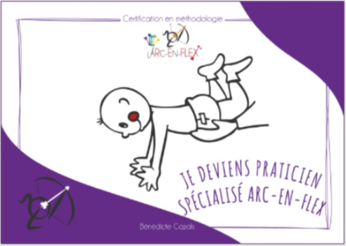
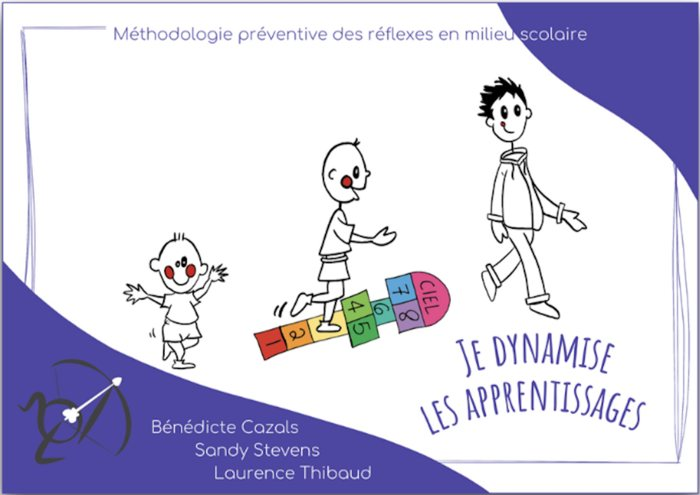

Formations · Alsace et Belgique
Je te forme aux réflexes archaïques avec le parcours certifiant Arc-en-Flex®
Tu accompagnes des enfants, des adolescents ou des adultes, et certaines situations te résistent malgré tout ? Tu expliques, tu adaptes, mais rien ne tient vraiment dans le temps.
Ce n'est pas un manque de volonté
Tu passes juste à côté du système nerveux.
- Agitation ou difficulté à rester en place
- Difficultés d'apprentissage ou de concentration
- Décalage entre compréhension et mise en action
- Émotions qui débordent
Je suis formatrice en réflexes archaïques et je propose le cursus complet de certification praticien Arc-en-Flex®, du module de base jusqu'à la pratique professionnelle. Cette formation permet de comprendre ce qui se joue réellement dans le corps et d'adapter son accompagnement avec plus de justesse.
Ce que tu vas apprendre
- Comprendre le fonctionnement du système nerveux
- Identifier les réflexes archaïques non intégrés
- Faire des liens concrets avec les difficultés observées
- Construire un accompagnement cohérent
- Utiliser des outils concrets, avec du sens
Tu ne fais plus « des exercices » : tu comprends ce que tu fais.

Une formation ancrée dans le terrain
J'ai été enseignante pendant 15 ans avant d'accompagner en cabinet
Ce double regard me permet de proposer une formation concrète, directement applicable et reliée aux réalités du terrain. Elle s'adresse aux professionnels de l'éducation, de la santé, de l'accompagnement et du mouvement, mais aussi à toute personne qui souhaite approfondir sa compréhension du système nerveux.
Prochaines formations
Les groupes sont volontairement limités, alors pense à réserver ta place
Promotion 2026-2027 en Alsace
À Obernai, à proximité de Strasbourg
- Rougedu 29 octobre au 1er novembre 2026terminé
- Rougedu 7 au 10 décembre 2026
- Orangedu 4 au 7 mars 2027
- Jaunedu 29 avril au 2 mai 2027
- Vertdu 3 au 6 juillet 2027
- Violetdu 27 au 29 août 2027
Promotion 2027-2028 en Belgique
À proximité de Bruxelles
- Rougedu 12 au 15 février 2027
- Rougedu 26 au 29 mars 2027
- Orangedu 21 au 24 mai 2027
- Jaunedu 17 au 20 septembre 2027
- Vertdu 3 au 6 décembre 2027
- Violetdu 26 au 29 janvier 2028
Un parcours complet
La formation avance module par module jusqu'à la certification
L'objectif est de te rendre autonome, pertinent(e) et solide dans ta pratique.





